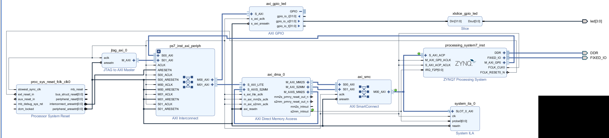
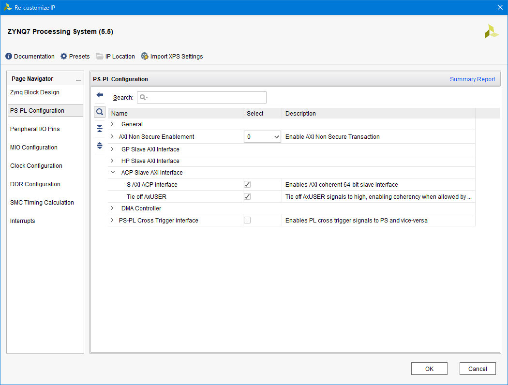
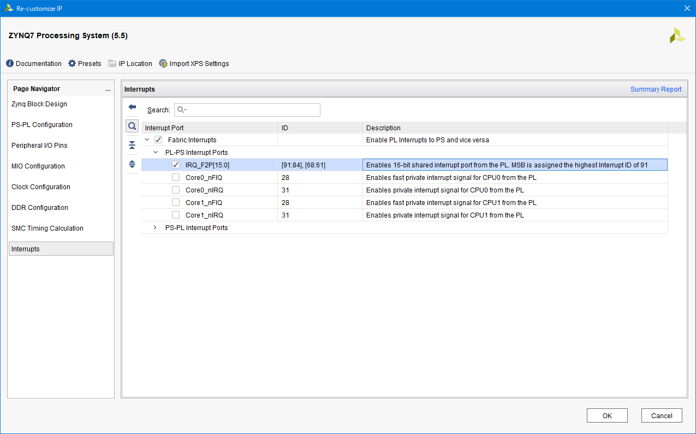
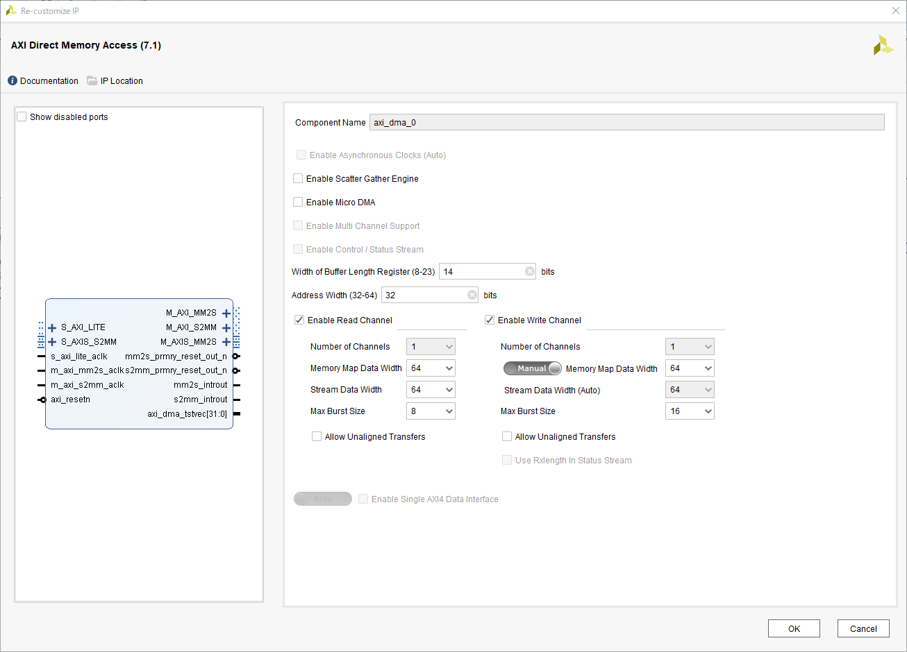
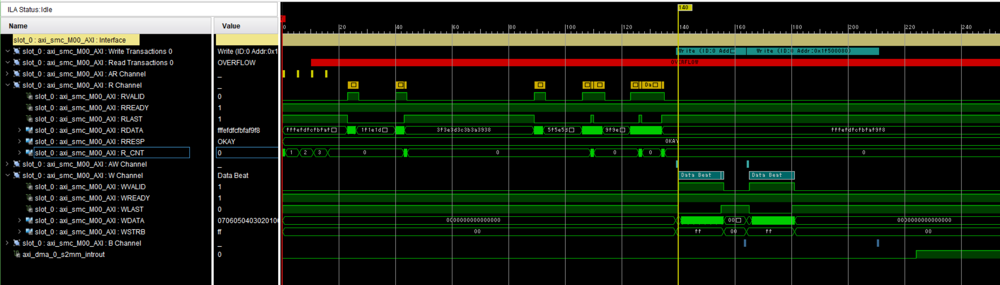
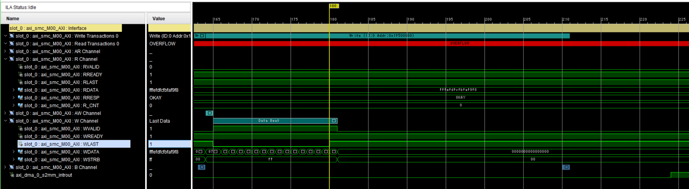
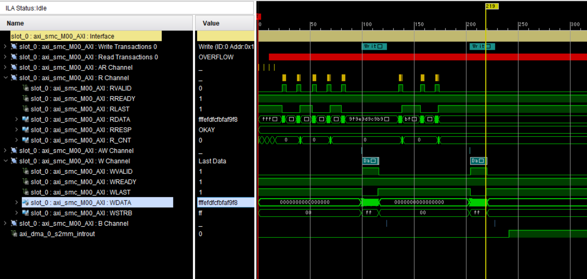
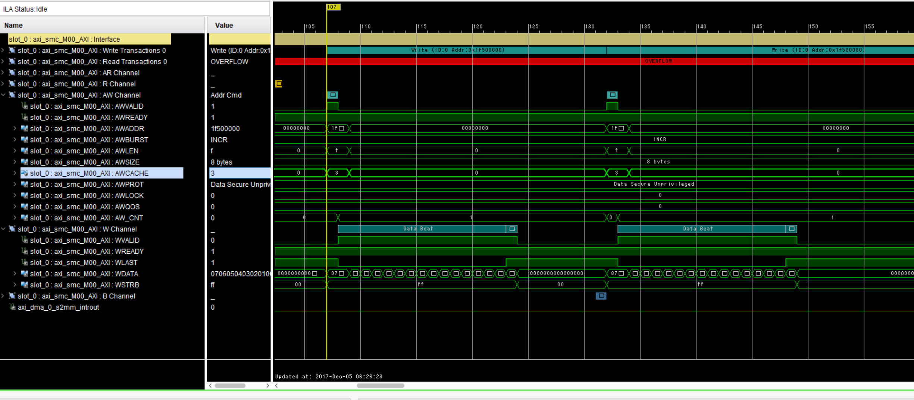

FPGA+SoC+LinuxでXilinx AXI DMAを試す¶
概要¶
FPGA+SoC+Linux on PYNQ-Z1でDevice Tree Overlayと`udmabuf`を使ってXilinx AXI DMAを試した。
背景¶
FPGA+SoC+Linux実践勉強会 [1] に参加して、Device Tree Overlayとudmabufを使ったDMAを試そうとしたが、時間が足りず`UIO`経由でGPIOを操作してLEDを光らせることしかできなかった。
もともとDevice Tree Overlayと合わせてDMAを簡単に試すことが目的だったので、残りのDMAの部分を試してみた。
| [1] | https://fpgax.connpass.com/event/71364/?utm_campaign=event_message_to_selected_participant&utm_source=notifications&utm_medium=email&utm_content=title_link |
実験に用いたデザイン¶
下記のPYNQ-Z1 (XC7Z020-CLG400-1)用デザインを作成した。エクスポートしたものは ここ にある また、プロジェクトのアーカイブを OneDrive に置いておく。
{kind=link}
PSのACPポートにAXI DMAを接続し、DMAのM_AXIS_MM2SをS_AXIS_S2MMに繋いで、DMAでPSのメモリから読みだした内容をDMAでPSのメモリに書き込むという構成となっている。 また、DMAの転送完了時の割り込みを受け取るために、AXI DMAのs2mm_intoutをPSのIRQ_F2Pに接続している。
{kind=link}
PSのACPポートでは、S AXI ACP Interfaceを有効にしている。また、AXI DMAはDirect Registerモードの場合、AxUSERの値を制御できないので、Tie off AxUSERを有効にしている。
{kind=link}
PSの割り込みの設定では、IRQ_F2P[15:0]を有効にしている。これによりコア共有の割り込み(Shared Peripheral Interrupt : SPI)をPLから入力することができる。
{kind=link}
AXI DMAは上記の通り、Scatter Gather Engineを無効にし、Memory Map Data WidthやStream Data Widthを64bitに設定する。
DMAで一度に長い転送を行いたい場合は、 Width of Buffer Length Register を増やしておく。デフォルトでは14ビットなので、2^14 - (DataWidthBytes) = 16384 - 8 = 16,376バイトまでしか転送できない。 最大で、8[MiB] - 8 バイトまで設定できる。
実験に用いたコード¶
実験には、FPGA-SoC-Linuxのリポジトリ にある`uio_irq_sample <https://github.com/ikwzm/FPGA-SoC-Linux/tree/master/target/zynq-pynqz1/examples/uio_irq_sample>`_ をAXI DMA用に変更したコードを用いた。
uio_irq_sampleを適当にコピーし、 sample1.c と sample_common.h を変更した。
元のuio_irq_sampleで使用しているデザイン内のDMAコアと異なり、Xilinx AXI DMAのDirect Registerモードでは、転送バイト数を指定する LENGTH レジスタに書き込みを行うと転送を開始する。
このため、pump_setup 関数から転送バイト数の引数を除き、pump_start 関数に転送バイト数の引数を追加している。
sample1.cの方は、上記の変更に合わせて、呼び出し時の引数を変更している。
sample_common.hの変更部分の抜粋
#define PUMP_OUTLET_DMACR (0x0030)
#define PUMP_OUTLET_DMASR (0x0034)
#define PUMP_OUTLET_DA (0x0048)
#define PUMP_OUTLET_DA_MSB (0x004c)
#define PUMP_OUTLET_LENGTH (0x0058)
#define PUMP_INTAKE_DMACR (0x0000)
#define PUMP_INTAKE_DMASR (0x0004)
#define PUMP_INTAKE_SA (0x0018)
#define PUMP_INTAKE_SA_MSB (0x001c)
#define PUMP_INTAKE_LENGTH (0x0028)
#define PUMP_CR_RS (1u<<0)
#define PUMP_CR_RESET (1u<<2)
#define PUMP_CR_IOC_IrqEn (1u<<12)
#define PUMP_CR_ERR_IrqEn (1u<<14)
#define PUMP_SR_HALTED (1u<<0)
#define PUMP_SR_IDLE (1u<<1)
#define PUMP_SR_IOC_Irq (1u<<12)
#define PUMP_SR_ERR_Irq (1u<<14)
static inline void pump_intake_reset(void* regs)
{
regs_write32(regs + PUMP_INTAKE_DMACR, PUMP_CR_RESET);
while( regs_read32(regs + PUMP_INTAKE_DMACR) & PUMP_CR_RESET );
}
static inline void pump_outlet_reset(void* regs)
{
regs_write32(regs + PUMP_OUTLET_DMACR, PUMP_CR_RESET);
while( regs_read32(regs + PUMP_OUTLET_DMACR) & PUMP_CR_RESET );
}
static inline void pump_intake_setup(void* regs, unsigned long buf_addr)
{
regs_write32(regs + PUMP_INTAKE_DMACR , PUMP_CR_RS | PUMP_CR_IOC_IrqEn | PUMP_CR_ERR_IrqEn);
regs_write32(regs + PUMP_INTAKE_DMASR , PUMP_SR_IOC_Irq | PUMP_SR_ERR_Irq);
regs_write32(regs + PUMP_INTAKE_SA , buf_addr);
regs_write32(regs + PUMP_INTAKE_SA_MSB, buf_addr >> 32);
}
static inline void pump_outlet_setup(void* regs, unsigned long buf_addr)
{
regs_write32(regs + PUMP_OUTLET_DMACR , PUMP_CR_RS | PUMP_CR_IOC_IrqEn | PUMP_CR_ERR_IrqEn);
regs_write32(regs + PUMP_OUTLET_DMASR , PUMP_SR_IOC_Irq | PUMP_SR_ERR_Irq);
regs_write32(regs + PUMP_OUTLET_DA , buf_addr);
regs_write32(regs + PUMP_OUTLET_DA_MSB, buf_addr >> 32);
}
static inline void pump_intake_start(void* regs, unsigned int xfer_size)
{
regs_write32(regs + PUMP_INTAKE_LENGTH, xfer_size);
}
static inline void pump_outlet_start(void* regs, unsigned int xfer_size)
{
regs_write32(regs + PUMP_OUTLET_LENGTH, xfer_size);
}
static inline void pump_intake_clear_status(void* regs)
{
regs_write32(regs + PUMP_INTAKE_DMASR, PUMP_SR_IOC_Irq | PUMP_SR_ERR_Irq);
}
static inline void pump_outlet_clear_status(void* regs)
{
regs_write32(regs + PUMP_OUTLET_DMASR, PUMP_SR_IOC_Irq | PUMP_SR_ERR_Irq);
}
static inline void pump_reset(void* regs)
{
pump_intake_reset(regs);
pump_outlet_reset(regs);
}
static inline void pump_setup(void* regs, unsigned long src_addr, unsigned long dst_addr)
{
pump_outlet_setup(regs, dst_addr);
pump_intake_setup(regs, src_addr);
}
static inline void pump_start(void* regs, unsigned int xfer_size)
{
pump_outlet_start(regs, xfer_size);
pump_intake_start(regs, xfer_size);
}
sample1.cの変更部分の抜粋
//
check_size = outlet_buf.buf_size;
check_size = 0x100;
printf("Resetting DMA core... \n");
// Reset DMA core.
pump_reset(regs);
while (--check_count >= 0) {
int error_count = 0;
int i;
for(i = 0; i < check_size ; i++) {
((unsigned char*)(intake_buf.buf))[i] = (i & 0xFF);
((unsigned char*)(outlet_buf.buf))[i] = 0;
}
gettimeofday(&start_time, NULL);
printf("Setting up DMA... \n");
pump_setup(regs, intake_buf.phys_addr, outlet_buf.phys_addr);
uio_irq_on(uio_fd);
printf("Starting DMA... \n");
pump_start(regs, check_size);
元のコードではcheck_sizeをudmabufで確保したバッファの長さとしているが、前述のAXI DMAの転送可能な長さより大きいので、今回は256バイトに制限している。
あと、細かい点であるが、ビットストリームを更新しても rake install で /lib/firmware 以下のビットストリームが更新されなかったので、 Rakefile に依存関係を指定した。
file "/lib/firmware/#{FPGA_BITSTREAM_FILE}" => ["#{FPGA_BITSTREAM_FILE}"] do
sh "cp #{FPGA_BITSTREAM_FILE} /lib/firmware/#{FPGA_BITSTREAM_FILE}"
end
実行結果¶
以下に実行時の出力を示す
fpga@debian-fpga:~/examples/uio_irq_sample_modified$ ./sample1
Resetting DMA core...
Setting up DMA...
Starting DMA...
time = 0.000134 sec
check buffer error addr=00000001, i=01, o=00
check buffer error addr=00000002, i=02, o=00
check buffer error addr=00000003, i=03, o=00
check buffer error addr=00000004, i=04, o=00
check buffer error addr=00000005, i=05, o=00
check buffer error addr=00000006, i=06, o=00
check buffer error addr=00000007, i=07, o=00
check buffer error addr=00000008, i=08, o=00
check buffer error addr=00000009, i=09, o=00
check buffer error addr=0000000a, i=0A, o=00
check buffer error addr=0000000b, i=0B, o=00
check buffer error addr=0000000c, i=0C, o=00
check buffer error addr=0000000d, i=0D, o=00
check buffer error addr=0000000e, i=0E, o=00
check buffer error addr=0000000f, i=0F, o=00
check buffer error addr=00000010, i=10, o=00
check buffer error
なぜか転送結果が一致していないようである。デザイン中のPSのACPポートとインターコネクトの接続部分にILAを入れてあるので波形を観測した結果は次の通りである
{kind=link}
一番下の axi_dma_0_s2mm_introut が、メモリへのDMA転送完了時の割り込み信号である。ぱっと見た感じでは、書き込みのトランザクション完了後に割り込み信号が起きており、正常に動作しているように見える。
{kind=link}
また、最後の書き込みトランザクションの、最後の書き込みデータは 0xfffefdfc_fbfaf9f8 となっており、サンプルプログラムの期待値と一致する。
以上より、データ・キャッシュ周りが怪しいので、udmabufのデバイスを開くときに、O_SYNCを指定してキャッシュを無効化して再度実行した。
fpga@debian-fpga:~/examples/uio_irq_sample_modified$ ./sample1
Resetting DMA core...
Setting up DMA...
Starting DMA...
time = 0.000111 sec
Setting up DMA...
Starting DMA...
time = 0.000166 sec
今度は成功したようである。
また、処理中の信号波形は以下のようになった。
{kind=link}
転送時の波形の変化と、キャッシュの効果の関係については不明である。
念のため、合成結果でACPポートのAxUSERの接続について確認したが、SAXIACPARUSER、SAXIACPAWUSERともに1に固定となっている。 また、O_SYNCを指定する前のAWCACHEの値も、以下の通り0x03となっている。
{kind=link}
まとめ¶
udmabufを使ったXilinx AXI DMAのDirect RegisterモードでのDMA転送はかなり簡単にできることが分かった。
ただし、ACPポートを使ったキャッシュ周りの管理は、もう少し調査が必要である。
参考¶
- ikwzm/FPGA-SoC-Linux
- https://github.com/ikwzm/FPGA-SoC-Linux/
- FPGA+SoC+Linux+Device Tree Overlay+FPGA Manager(PYNQ-Z1対応)
- https://qiita.com/ikwzm/items/d6fdaa859906252fd8b0
- Linux Kernel 4.10でのFPGAサポート事情
- https://qiita.com/ikwzm/items/2ff7d5429da8ace7c0bd
- Linux の FPGA Manager で Xilinx のビットストリームファイルを扱う方法
-
https://qiita.com/ikwzm/items/1bb63be0b86a1e0e56fa
FPGA Managerにビットストリームを渡す場合は、ヘッダを除去してエンディアン変換しないといけないらしい。
- Zynq-7000 All Programmable SoC Technical Reference Manual (UG585)
-
https://www.xilinx.com/support/documentation/user_guides/ug585-Zynq-7000-TRM.pdf
pp.103-106にACPポートのAxCACHE、AxUSERの意味の説明が書いてある。